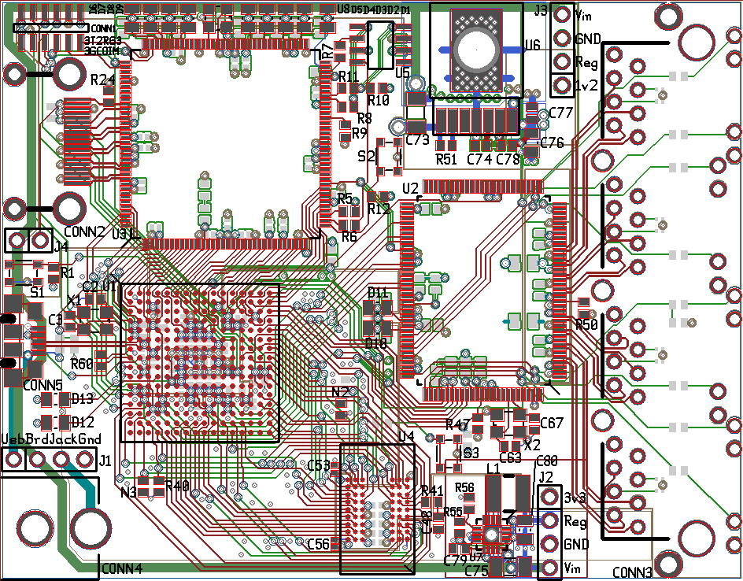
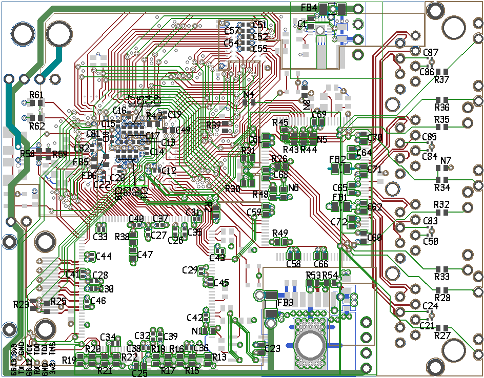

Source files are on github.
The CPU is a NXP LPC4357 ARM M4+M0 in a 256-ball BGA package. There's a 32MB SDRAM (54-ball BGA, 0.8mm pitch).
The switch is a Micrel KSZ8895RQ. Just for fun there's a Spartan 6 FPGA driving an HDMI connector.
Board front side image:

Back side image:
